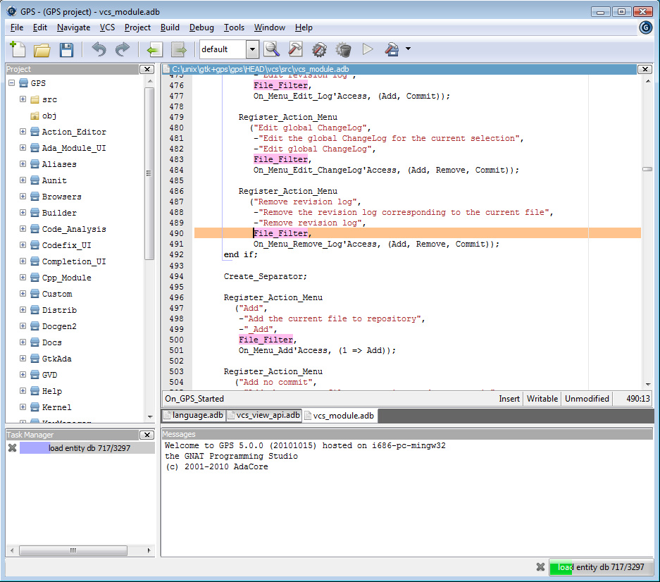

Previous topic
Using the GNAT Programming Studio
Next topic
2. Description of the Main Windows

Using the GNAT Programming Studio
2. Description of the Main Windows
GPS is a complete integrated development environment that gives access to a wide range of tools and integrates them smoothly.
GPS gives access to built-in file editing; HTML based help system; complete compile/build/run cycle; intelligent source navigation; project management; general graph technology giving access to many different browsers such as source dependency, project dependency, call graphs, entity view, etc...; fully integrated visual debugger; generic version control system, providing access to CVS, Subversion, ClearCase, GIT, and any other via xml plug-ins; many other tools such as a visual comparison, automatic generation of files, source reformatting.
GPS is fully customizable, providing several levels of customizations: a first level, available through the preferences and key manager dialogs; a second level, which allows you to customize your menu items, tool bar and key bindings; a third level, which allows you to automate processing through scripts (via xml and python scripting). See Customizing and Extending GPS for more details.
GPS also interacts with most versions of command-line tools such as gcc, gdb, gnatmake, gprbuild, gcov, etc...
